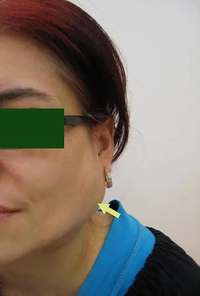
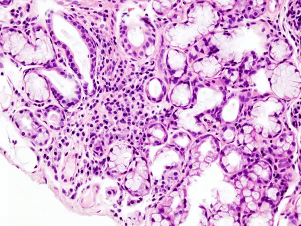

DX.7 — Maladie de Sjögren
La maladie de Sjögren assèche les yeux et la bouche, mais elle peut aussi atteindre le rein, le poumon, les nerfs et évoluer vers un lymphome S1S4. Le médecin la confirme par des critères pondérés qui exigent soit des anticorps anti-SSA, soit une biopsie labiale positive S3. Une tuméfaction salivaire nouvelle chez une patiente connue impose une exploration rapide, car elle peut révéler un lymphome S5.
1. Définition
La Revue Médicale Suisse définit la maladie de Sjögren comme une maladie autoimmune chronique caractérisée par une infiltration lymphocytaire des glandes exocrines, notamment lacrymales et salivaires S1. Cette atteinte reste systémique, car elle ne se limite pas aux glandes et peut toucher de nombreux autres organes S1. La Ligue suisse contre le rhumatisme emploie depuis janvier 2026 le terme « maladie de Sjögren », qui remplace « syndrome de Sjögren » S2.
2. Épidémiologie (Suisse, puis Europe)
La Ligue suisse contre le rhumatisme estime que 15 000 à 20 000 personnes vivent avec la maladie en Suisse S2. Elle précise que les femmes sont dix fois plus touchées que les hommes S2.
Une méta-analyse de 21 études montre une incidence mondiale de 6,92 cas pour 100 000 personnes-années et une prévalence de 60,82 cas pour 100 000 habitants S7. Les études fondées sur la population générale donnent une prévalence plus basse, à 43,03 cas pour 100 000 habitants S7. Le rapport femmes sur hommes atteint 10,72 dans les données de prévalence, et l’âge moyen des patients atteint 56 ans S7.
Les manifestations extraglandulaires concernent environ 30 % des patients selon les Hôpitaux universitaires de Genève, qui y comptent surtout les atteintes viscérales graves S1. La ligne directrice britannique de 2025 retient au moins 70 % d’atteintes systémiques, car elle inclut aussi les arthralgies et les anomalies hématologiques S4. L’écart entre ces deux chiffres provient donc des définitions, et non d’une contradiction entre les cohortes ; cette lecture reste une déduction. Le tableau suivant précise la population et la mesure de chaque chiffre.
Population et mesure des chiffres
| Chiffre | Population et mesure | Source |
|---|---|---|
| 15 000 à 20 000 personnes | Population suisse, estimation de la Ligue suisse contre le rhumatisme publiée le 20.01.2026 | S2 |
| Femmes dix fois plus touchées | Population suisse, même communiqué | S2 |
| Incidence 6,92 pour 100 000 personnes-années | Méta-analyse mondiale de 21 études, recherche close le 22.10.2013 | S7 |
| Prévalence 60,82 pour 100 000 | Toutes études confondues, même méta-analyse | S7 |
| Prévalence 43,03 pour 100 000 | Études fondées sur la population générale seulement | S7 |
| Atteinte extraglandulaire 30 % | Revue genevoise de 2022, atteintes viscérales | S1 |
| Atteinte systémique au moins 70 % | Ligne directrice britannique de 2025, arthrite, peau, sang, nerfs, poumon, lymphome | S4 |
| Lymphome 5 à 10 % sur la vie | Ligne directrice britannique de 2025 | S4 |
Le risque de lymphome B au cours de la vie atteint 5 à 10 %, ce qui fait de cette complication la menace principale à long terme S4. Une mortalité légèrement accrue a été observée, surtout chez les hommes et chez les patients porteurs d’une atteinte pulmonaire S4.
3. Physiopathologie
La cause de la maladie reste inconnue, et aucun traitement curatif n’existe à ce jour S4. Le mécanisme connu associe une infiltration lymphocytaire des glandes exocrines à une activation des lymphocytes B, qui joue un rôle central S1. La base anatomique et histologique rappelle d’abord ce que la glande produit normalement.
Base à connaître : glandes exocrines et focus lymphocytaire
La salive provient de trois paires de glandes majeures, parotides, sous-maxillaires et sublinguales, et de multiples petites glandes accessoires S1. Le débit quotidien varie entre 0,5 et 1,5 litre, ce qui explique la gêne marquée quand la sécrétion s’effondre S1.
Le pathologiste appelle focus un agrégat de plus de 50 cellules mononucléées ; le focus score compte ces agrégats par 4 mm² de tissu glandulaire S1S4. Dans la glande lacrymale, des amas de lymphocytes T cytotoxiques (CD8+) entourent les cellules épithéliales acineuses et pourraient entretenir le défaut de sécrétion S4.
Les lymphocytes infiltrent progressivement les acini et les canaux, puis la sécrétion lacrymale et salivaire diminue ; le syndrome sec en découle S1S4. Des centres germinatifs organisés apparaissent dans 25 % des biopsies au diagnostic, et plusieurs études rétrospectives les relient à un lymphome ultérieur S4. La stimulation chronique des lymphocytes B explique ainsi la production d’auto-anticorps, l’hypergammaglobulinémie et la cryoglobulinémie S1S4.
Le même processus touche d’autres organes : la néphrite tubulo-interstitielle provoque une acidose tubulaire distale, et la vasculite cryoglobulinémique atteint la peau ou le glomérule S1S4. La fenêtre du mécanisme au signe relie chaque lésion à son expression clinique et à son traitement.
Du mécanisme au signe et au traitement
| Mécanisme | Signe | Conséquence thérapeutique |
|---|---|---|
| Infiltrat des glandes lacrymales | Yeux secs, test de Schirmer abaissé S1 | Larmes artificielles sans conservateur S4 |
| Infiltrat des glandes salivaires | Bouche sèche, caries, débit au repos abaissé S1 | Substituts salivaires, fluor, pilocarpine si glande résiduelle selon l’AIPS (information professionnelle suisse) S5AIPS 55901 |
| Activation lymphocytaire B persistante | Tuméfaction parotidienne, purpura, fraction C4 (quatrième composant du complément) basse S4 | Exploration rapide d’un lymphome S5 |
| Néphrite tubulo-interstitielle | Hypokaliémie, acidose hyperchlorémique S1 | Surveillance, bicarbonate et potassium si nécessaire S1 |
| Atteinte des petites fibres nerveuses | Douleurs neuropathiques, perception thermique altérée S1 | Traitement de la douleur chronique, puis immunomodulation selon l’atteinte S1 |
Les auto-anticorps n’expliquent pas seuls la sécheresse, car un tiers des malades n’en produit aucun alors que leurs glandes restent infiltrées S1. La lésion glandulaire, visible à la biopsie, reste donc le substrat commun de la maladie ; cette conclusion découle du rôle central de l’histologie dans les critères S1S3.
La fenêtre atteinte rénale tubulaire illustre comment l’infiltrat lymphocytaire produit un trouble biologique silencieux.
Atteinte rénale tubulaire
La néphrite tubulo-interstitielle chronique provoque une acidose tubulaire distale, qui peut être complète, avec acidose systémique, ou incomplète, avec un seul défaut d’acidification urinaire S4. La forme complète touche environ 5 % des patients, alors que la forme incomplète en touche 25 % S4.
L’hypokaliémie et l’acidose hyperchlorémique doivent alerter le clinicien, car l’atteinte reste souvent insidieuse et sous-diagnostiquée S1. Une glomérulonéphrite, plus rare, survient surtout dans le cadre d’une cryoglobulinémie S1.
4. Démarche diagnostique
La démarche recherche d’abord les atteintes graves, avant le confort : lymphome, atteinte rénale, vasculite, atteinte neurologique centrale et bloc cardiaque congénital pendant la grossesse S1S4S5. Le médecin cherche ensuite à objectiver la sécheresse, puis il prouve l’autoimmunité par la sérologie ou par la biopsie S1S3.
Une bouche sèche ne signe pas une maladie de Sjögren, car les médicaments anticholinergiques, l’irradiation et plusieurs maladies infiltratives donnent le même tableau S3. Les critères de l’American College of Rheumatology (ACR) et de l’European Alliance of Associations for Rheumatology (EULAR) excluent donc d’abord sept situations, détaillées dans la fenêtre diagnostics à écarter S3.
La fenêtre les graves d’abord classe ces atteintes selon le signe qui les révèle et l’examen qui les confirme.
Les graves d’abord
| Atteinte grave | Signe d’appel | Examen d’orientation |
|---|---|---|
| Lymphome B, souvent de type MALT (tissu lymphoïde associé aux muqueuses) | Tuméfaction salivaire persistante, adénopathies, splénomégalie S4 | Avis spécialisé rapide, imagerie et biopsie S1S5 |
| Néphrite tubulo-interstitielle | Faiblesse, crampes, hypokaliémie S1 | Ionogramme, gaz du sang, créatinine S1 |
| Glomérulonéphrite | Hématurie, protéinurie, œdèmes S1 | Sédiment urinaire, cryoglobulines S1 |
| Pneumopathie interstitielle | Toux sèche chronique, dyspnée S1 | Imagerie thoracique et avis pneumologique S1 |
| Vasculite ou myélite | Purpura, déficit neurologique central S1 | Avis neurologique ou dermatologique urgent S1 |
| Bloc cardiaque congénital | Grossesse chez une femme porteuse d’anti-SSA S4 | Suivi obstétrical spécialisé S4S5 |
Diagnostics à écarter devant un syndrome sec
| Situation | Pourquoi elle exclut le diagnostic | Indice d’orientation |
|---|---|---|
| Irradiation de la tête et du cou | Elle détruit les glandes et donne une sécheresse sans autoimmunité S3 | Antécédent de radiothérapie cervico-faciale |
| Hépatite C active | Elle mime la sialadénite ; la PCR (amplification génique) positive l’exclut S3 | Facteurs de risque viraux, transaminases |
| Infection par le virus de l’immunodéficience humaine (VIH) au stade sida | Le syndrome d’immunodéficience acquise figure parmi les exclusions S3 | Sérologie du VIH |
| Sarcoïdose | Elle infiltre aussi les glandes ; l’échographie ne la distingue pas toujours S3S4 | Adénopathies hilaires, granulomes à la biopsie |
| Amylose | Les dépôts amyloïdes infiltrent les glandes salivaires S3 | Macroglossie, atteinte cardiaque ou rénale |
| Réaction du greffon contre l’hôte | Elle produit une sécheresse après une greffe de cellules souches S3 | Antécédent de greffe allogénique |
| Maladie associée aux IgG4 | Elle gonfle les glandes salivaires et lacrymales S3 | Tuméfaction ferme, IgG4 sériques élevées |
Le patient sous traitement anticholinergique reçoit une mesure objective après un intervalle suffisant sans ce médicament, comme l’exigent les critères de classification S3. L’erreur classique du débutant consiste à conclure sur une sérologie isolée.
Erreur classique du débutant
Le débutant retient la maladie devant des anticorps antinucléaires positifs, alors que leur spécificité varie de 50 à 97 % selon les études S4. Un tiers des malades reste en outre sans anomalie immunologique, si bien qu’une sérologie négative n’exclut pas le diagnostic S1.
Le bon réflexe consiste à objectiver la sécheresse, à demander les anti-SSA, puis à discuter la biopsie labiale si la sérologie reste négative S1S5.
5. Anamnèse ciblée et drapeaux rouges
L’anamnèse caractérise la sécheresse, recherche les signes extraglandulaires, puis inventorie les médicaments ; trois fenêtres détaillent ces temps : syndrome sec, atteintes extraglandulaires et drapeaux rouges S1S3.
Caractériser le syndrome sec
Le médecin demande si les yeux brûlent, grattent ou donnent une sensation de sable, et si la patiente utilise déjà des larmes artificielles S1S4. Il demande aussi si elle doit boire pour avaler un aliment sec, et si des caries nouvelles sont apparues malgré une hygiène correcte S4S5.
Il recherche la sécheresse du nez, de la peau et du vagin, car la Ligue suisse décrit l’assèchement de toutes ces muqueuses S2. Le questionnaire de la Société multidisciplinaire des glandes salivaires comprend 20 questions et mesure la xérostomie et la sialadénite S1.
Une sécheresse qui apparaît après un nouveau médicament oriente plutôt vers une cause médicamenteuse, traitée au DX.2 S3.
Atteintes extraglandulaires à rechercher
| Organe | Question ou constat | Fréquence ou valeur |
|---|---|---|
| Articulations | Arthralgies des petites articulations des mains, souvent avant la sécheresse S1 | Un patient sur deux S1 |
| Poumons | Toux sèche chronique, dyspnée, syndrome sec trachéobronchique S1 | Environ 10 % S1 |
| Reins | Crampes, faiblesse, lithiase ; hypokaliémie au laboratoire S1 | Acidose tubulaire complète 5 %, incomplète 25 % S4 |
| Nerfs périphériques | Brûlures, perception du chaud et du froid altérée S1 | Atteinte neurologique la plus fréquente S1 |
| Peau | Peau sèche, purpura, livédo S1 | Sécheresse cutanée chez la majorité S1 |
| État général | Fatigue extrême, douleurs des membres S2 | Asthénie quasi constante S1 |
| Thyroïde et intestin | Signes d’hypothyroïdie, diarrhée chronique S4 | Thyroïdopathie 22 %, maladie cœliaque dix fois plus fréquente S4 |
Drapeaux rouges devant une maladie de Sjögren
Chaque signe suivant change la conduite et impose un avis spécialisé rapide S1S5 :
- Une tuméfaction salivaire nouvelle ou persistante fait rechercher un lymphome, d’autant plus qu’une hypertrophie parotidienne multiplie ce risque par 5,21 S4S5.
- Un purpura palpable témoigne d’une vasculite cryoglobulinémique et prédit aussi le lymphome S4.
- Une faiblesse musculaire avec hypokaliémie oriente vers une acidose tubulaire distale complète S1S4.
- Une toux sèche chronique ou une dyspnée fait rechercher une pneumopathie interstitielle S1.
- Un déficit neurologique central suggère une vasculite cérébrale ou une myélite transverse S1.
- Une grossesse chez une patiente porteuse d’anti-SSA fait courir au fœtus le risque d’un bloc cardiaque congénital S4.
Le médecin recherche enfin les médicaments, les antécédents de radiothérapie, de greffe et d’hépatite, ainsi que les grossesses antérieures compliquées d’un bloc cardiaque S3S4. Il recherche aussi les antécédents familiaux de maladie autoimmune et les signes d’une connectivite associée, qui modifient la conduite rhumatologique ; ce dernier point reste une déduction.
6. Examen physique ciblé, région par région
L’examen suit six régions, de la surface oculaire aux aires ganglionnaires S1S4. Chaque région dispose d’une fenêtre qui lui est propre : yeux, bouche, glandes salivaires, peau, articulations et ganglions, rate et poumons S1S4.
Région 1 : yeux
Le médecin inspecte la conjonctive, recherche une rougeur et demande la gêne à la lumière, puis il réalise un test de Schirmer s’il dispose des bandelettes S1. L’ophtalmologue complète par la coloration à la fluorescéine et au vert de lissamine, qui révèle les lésions de la surface oculaire S1.
Tuméfaction parotidienne dans une maladie de Sjögren. La photographie en couleurs, publiée sous le titre d’œdème parotidien d’une maladie de Sjögren, montre une loge parotidienne gonflée sous le lobule de l’oreille S8.

Lisez d'abord seul ce cliché (tuméfaction parotidienne dans une maladie de sjögren) : cherchez vous-même le signe.
La copie annotée (tuméfaction parotidienne dans une maladie de sjögren) numérote les repères qui sont décrits ci-dessous.
- La photographie ne dit pas si la tuméfaction est récente ; or une tuméfaction nouvelle ou persistante change la conduite S5.
Ce que l'image décide. Le médecin palpe la glande, note sa consistance et sa date d’apparition, puis il adresse la patiente rapidement si la tuméfaction est nouvelle S4S5.
7. Approche syndromique
7.1 Syndrome sec oculobuccal
Les signes fonctionnels associent yeux qui brûlent, sensation de sable, bouche sèche et besoin de boire pour avaler ; les signes physiques associent caries, salive rare et Schirmer abaissé S1S4. Le mécanisme commun reste la destruction inflammatoire des acini lacrymaux et salivaires S1.
La Ligue suisse rappelle que la sécheresse ne se limite pas aux yeux et à la bouche : le nez, les bronches et les organes génitaux féminins s’assèchent aussi S2. La Revue Médicale Suisse décrit en outre un syndrome sec trachéobronchique, qui explique une toux sèche persistante S1.
7.2 Syndrome systémique autoimmun
La fatigue, les arthralgies, le purpura, l’hypokaliémie et la neuropathie des petites fibres traduisent l’activité de la maladie hors des glandes S1. L’indice d’activité de l’EULAR (ESSDAI) comprend douze domaines pondérés et sépare l’activité en faible, modérée ou élevée S1.
Indices d’activité de la maladie
L’ESSDAI (EULAR Sjögren’s Syndrome Disease Activity Index) comprend 12 domaines pondérés qui évaluent les complications de la maladie S1. Un score de 5 à 13 correspond à une activité modérée, et un score supérieur à 13 à une activité élevée S1.
L’ESSPRI (EULAR Sjögren’s Syndrome Patient Reported Index) pose 3 questions sur la sécheresse, la fatigue et les douleurs, notées de 0 à 10 S1. Ces deux indices ne mesurent pas la même chose : le premier suit les organes, alors que le second suit le vécu du patient S1S4.
7.3 Syndrome lymphoprolifératif
Une tuméfaction salivaire persistante, des adénopathies, une splénomégalie, un purpura et un C4 bas dessinent ensemble le profil du patient à haut risque de lymphome S4. Les lymphomes B de type MALT (tissu lymphoïde associé aux muqueuses) représentent le type le plus fréquent dans ces cohortes S1S4.
La fenêtre facteurs prédictifs du lymphome précise la force de chacun de ces signes.
Facteurs prédictifs du lymphome
| Facteur | Force de l’association | Source |
|---|---|---|
| Hypertrophie parotidienne | Rapport de risque 5,21 | S4 |
| Purpura palpable | Rapport de risque 4,16 | S4 |
| C4 bas | Rapport de risque 2,40 | S4 |
| Cryoglobulinémie | Facteur indépendant avec le focus score et l’hypertrophie salivaire | S4 |
| Lymphopénie et hypocomplémentémie | Seuls facteurs indépendants dans une autre cohorte | S4 |
8. Diagnostic positif et critères
Le diagnostic repose sur un faisceau qui relie l’anamnèse, l’examen physique et les analyses sanguines et tissulaires ; la Ligue suisse recommande de le faire confirmer par un rhumatologue expérimenté S2. Les critères ACR et EULAR de 2016 servent d’aide au clinicien, même s’ils ont été conçus pour la recherche S1S3.
Critères de classification ACR et EULAR de 2016
| Item | Poids | Précision |
|---|---|---|
| Sialadénite lymphocytaire focale, focus score ≥ 1 à la biopsie labiale | 3 | Un focus réunit plus de 50 cellules S1S3 |
| Anticorps anti-SSA (Ro) positifs | 3 | Seuls les anti-Ro60 comptent, les anti-Ro52 n’étant pas spécifiques S1S3 |
| Score de coloration oculaire ≥ 5 sur au moins un œil | 1 | Score de 0 à 12 attribué par l’ophtalmologue S1S3 |
| Test de Schirmer ≤ 5 mm en 5 minutes sur au moins un œil | 1 | Sans stimulation, sur un œil au moins S3 |
| Débit salivaire total non stimulé ≤ 0,1 mL/min | 1 | Mesuré hors anticholinergique S3 |
Ces critères s’appliquent à tout patient qui présente au moins un symptôme de sécheresse oculaire ou buccale, ou une suspicion issue du questionnaire ESSDAI S3. Le patient est classé quand la somme des poids atteint 4 ou plus, après exclusion des sept diagnostics du point 4 S3. La validation montre une sensibilité de 96 % et une spécificité de 95 % S3.
Sans anti-SSA, seule une biopsie labiale positive permet d’atteindre le seuil, puisque les trois autres items totalisent au plus 3 points S3. Cette conséquence arithmétique explique pourquoi la biopsie reste indispensable chez le patient séronégatif S1S5.
9. Examens complémentaires
9.a Gold standard
La biopsie des glandes salivaires accessoires reste l’examen de référence quand la clinique et la sérologie ne suffisent pas, avec une sensibilité de 80 à 92 % S4S5. Elle apporte aussi une information pronostique sur le risque de lymphome, chez les patients séropositifs comme chez les séronégatifs S5.
Biopsie des glandes salivaires accessoires
Indication. Le médecin la propose quand le diagnostic ne peut pas être posé par la clinique et la sérologie seules, surtout en l’absence d’anti-SSA S1S5.
Technique. Le chirurgien incise la lèvre inférieure sur moins de 1 cm et prélève jusqu’à 8 glandes, afin d’obtenir au moins 8 mm² de tissu S1.
Valeurs. La spécificité atteint 88 à 97 %, tandis que la biopsie parotidienne offre une sensibilité de 78 % et une spécificité de 86 % S4.
Limites. Les paresthésies et les hémorragies touchent environ 10 % des patients ; un chirurgien expérimenté limite ces complications S1. La ligne directrice britannique ne recommande pas la biopsie de la glande lacrymale en routine, faute de preuves suffisantes S5.
Biopsie labiale : sialadénite lymphocytaire focale. La coupe en couleurs, colorée à l’hématoxyline-éosine, montre une glande salivaire accessoire prélevée par biopsie labiale chez une patiente atteinte de la maladie S9.

Lisez d'abord seul ce cliché (biopsie labiale : sialadénite lymphocytaire focale) : cherchez vous-même le signe.
La copie annotée (biopsie labiale : sialadénite lymphocytaire focale) numérote les repères qui sont décrits ci-dessous.
Ce que l'image décide. Un focus score d’au moins 1 apporte 3 points ; avec un seul autre item positif, la patiente atteint alors le seuil de classification S3.
9.b Examens de première intention
Le bilan initial comprend le test de Schirmer, la sialométrie et le bilan immunologique ; chaque examen répond à une question précise S1.
Test de Schirmer
Indication. Tout clinicien peut objectiver la sécheresse oculaire par ce test simple et rapide S1.
Technique. Une bandelette millimétrée de papier buvard est placée dans le cul-de-sac conjonctival inférieur, près de l’angle externe, après un collyre anesthésique S1. La partie humidifiée est mesurée après 5 minutes S1.
Interprétation. La Revue Médicale Suisse considère le test pathologique sous 5 mm, et les critères comptent un point à 5 mm ou moins S1S3.
Sialométrie non stimulée
Technique. Le patient garde des tampons pesés en bouche pendant 5 à 15 minutes sans avaler, ou il crache sa salive dans un récipient gradué pesé S1.
Interprétation. La xérostomie objective correspond à un débit inférieur à 0,5 g en 5 minutes ou à 0,1 mL/min S1.
Limite. Aucune méthode n’est standardisée, si bien que les résultats varient d’un centre hospitalier à l’autre S1.
Bilan immunologique et biologique
Le médecin recherche les anticorps antinucléaires, les anticorps anti-antigènes nucléaires solubles, en particulier anti-SSA et anti-SSB, et le facteur rhumatoïde S1. Le facteur rhumatoïde est positif chez 48,6 % des patients d’une série de plus de 10 000 personnes S4.
Il complète par la formule sanguine, la vitesse de sédimentation, la protéine C réactive, la créatinine, le sédiment urinaire, le complément et l’électrophorèse des protéines S1. Il recherche des cryoglobulines si une maladie lymphoproliférative ou une glomérulonéphrite est suspectée S1.
Les auto-anticorps dits nouveaux ne font pas mieux que l’anti-SSA, et la ligne directrice britannique les réserve à la recherche S5.
La fenêtre performance des tests sérologiques permet d’interpréter un résultat isolé.
Performance des tests sérologiques
| Test | Sensibilité | Spécificité |
|---|---|---|
| Anticorps antinucléaires | 58 à 85 % S4 | 50 à 97 % S4 |
| Anticorps anti-antigènes nucléaires solubles | 89 à 92 % S4 | 71 à 77 % S4 |
| Facteur rhumatoïde de type IgA | 72 à 83,1 % S4 | 78,4 % S4 |
| Biopsie labiale | 80 à 92 % S4 | 88 à 97 % S4 |
| Biopsie parotidienne | 78 % S4 | 86 % S4 |
| Critères ACR et EULAR de 2016 | 96 % S3 | 95 % S3 |
9.c Examens de seconde intention
L’échographie des glandes salivaires et la sialo-IRM orientent vers la biopsie, mais aucune ne figure dans les critères de classification S1S5.
Échographie des glandes salivaires
L’échographie reste simple, non invasive et économique ; elle conforte le clinicien dans son choix de demander une biopsie S1. Elle dépend toutefois de l’opérateur et ne sépare pas toujours la maladie de Sjögren d’une sarcoïdose ou d’une autre connectivite S1S4.
Sialo-IRM
L’imagerie par résonance magnétique avec séquence sialographique détecte la maladie avec une sensibilité estimée entre 94 et 97 % S1. Elle montre un aspect « poivre et sel », des canaux dilatés ou sténosés, une infiltration graisseuse et une atrophie glandulaire S1. Elle aide aussi à rechercher un lymphome de type MALT S1.
9.d Bilan de suivi
Le bilan biologique annuel comprend la formule sanguine, l’inflammation, la créatinine et l’examen d’urine, car il dépiste une atteinte extraglandulaire silencieuse S1. Le dosage du complément et l’électrophorèse des protéines se répètent aussi chaque année S1.
9.e Examens inutiles ou non validés
La fenêtre examens à ne pas demander rassemble les examens dont la place n’est pas établie S1S4S5.
Examens à ne pas demander en routine
La sialographie conventionnelle irradie, exige une injection iodée dans les canaux et expose à des complications ; la plupart des centres l’ont donc abandonnée S1. Les biomarqueurs salivaires restent une piste prometteuse mais non validée en pratique clinique S1.
La tomographie par émission de positons, le scanner et l’imagerie par résonance magnétique (IRM) conventionnelle exigent encore de plus grandes études avant d’entrer dans le diagnostic ou le suivi S4. Les auto-anticorps dits nouveaux et la biopsie lacrymale ne relèvent pas non plus de la routine S5.
10. Arbre décisionnel
- Si une tuméfaction salivaire nouvelle, des adénopathies ou un purpura apparaissent, le médecin adresse la patiente rapidement pour exclure un lymphome S4S5.
- Si une faiblesse avec hypokaliémie, une dyspnée ou un déficit neurologique s’ajoutent, le médecin recherche l’atteinte d’organe correspondante (point 5) S1.
- Si la sécheresse a suivi une irradiation, une hépatite C, une sarcoïdose ou une greffe, le médecin traite cette cause et écarte la maladie de Sjögren S3.
- Si le patient prend un anticholinergique, le médecin mesure la sécheresse après un intervalle suffisant sans ce médicament S3.
- Si la sécheresse reste objective, le médecin demande les anti-SSA, le facteur rhumatoïde et le bilan biologique S1.
- Si les anti-SSA sont positifs et qu’un test de sécheresse est anormal, le score atteint 4 et la classification est acquise S3.
- Si les anti-SSA sont négatifs, le médecin discute la biopsie labiale, que l’échographie salivaire peut aider à indiquer S1S5.
- Si la biopsie montre un focus score d’au moins 1, le médecin additionne les items et confirme le diagnostic avec le rhumatologue S2S3.
- Si le score reste inférieur à 4, le médecin traite la sécheresse et réévalue le patient au cours du suivi S1S3.
11. Prise en charge selon les recommandations suisses
11.A But
Le traitement soulage la triade sécheresse, fatigue et douleur, puis il contrôle l’atteinte systémique selon sa gravité S6. Il vise aussi à protéger les dents et la surface oculaire, et à dépister tôt un lymphome S4S5.
11.B Moyens
La Ligue suisse rappelle qu’aucun médicament ne guérit l’assèchement des muqueuses ; les soins locaux, l’hygiène buccodentaire et le suivi ophtalmologique et dentaire restent donc primordiaux S2. La conduite suit les recommandations EULAR de 2019, qui comportent trois principes généraux et douze recommandations spécifiques S6.
Les mesures locales et la protection buccodentaire viennent toujours en premier, et la prise en charge oculaire les complète S4S5.
Mesures locales et protection buccodentaire
Les pastilles à sucer et les gommes à mâcher stimulent la salive résiduelle, et les substituts salivaires soulagent la sécheresse S2S5. Le patient se brosse les dents avec un dentifrice fluoré, consulte régulièrement le dentiste et remplace le sucre par des produits au xylitol S5.
La patiente utilise aussi des produits d’hygiène intime hydratants si la sécheresse vaginale la gêne S2.
Prise en charge oculaire
Le patient utilise des larmes artificielles sans conservateur, car le conservateur aggrave la sécheresse oculaire par son effet toxique et pro-inflammatoire S4. Les gouttes à l’acide hyaluronique font mieux que le sérum physiologique S4.
Les corticoïdes en collyre se prescrivent sur une courte durée, sous surveillance ophtalmologique, si l’inflammation persiste malgré ces gouttes S4.
La pilocarpine orale s’ajoute quand la sécheresse reste gênante et qu’une fonction glandulaire résiduelle persiste ; elle est autorisée en Suisse dans la xérostomie de la maladie de Sjögren S5AIPS 55901. La sudation touche environ la moitié des patients traités, et elle conduit parfois à l’arrêt AIPS 55901.
L’hydroxychloroquine peut être essayée 6 à 12 mois chez le patient fatigué avec des signes systémiques ; cette indication reste hors AIPS en Suisse S5AIPS 53831. Une méta-analyse de 13 études montre un effet sur la bouche et le débit au repos, mais aucun sur la fatigue ni sur les yeux S4.
Les corticoïdes systémiques servent seulement à des indications précises et brèves, comme une tuméfaction parotidienne, et non en traitement de fond S4S5. Le traitement des atteintes systémiques dépend de l’organe touché et de sa gravité.
Traitement des atteintes systémiques
| Atteinte | Première ligne | Recours |
|---|---|---|
| Arthralgies | Antalgie simple, anti-inflammatoire non stéroïdien, hydroxychloroquine S1 | Avis rhumatologique |
| Arthrites | Hydroxychloroquine S1 | Corticoïdes, méthotrexate, puis rituximab S1 |
| Atteinte rénale tubulaire | Surveillance, bicarbonate et potassium si nécessaire S1 | Corticoïdes, puis mycophénolate ou azathioprine S1 |
| Atteinte glomérulaire | Corticoïdes et méthotrexate S1 | Mycophénolate, azathioprine, puis rituximab S1 |
| Atteinte interstitielle pulmonaire | Corticoïdes S1 | Mycophénolate, azathioprine, rituximab, nintédanib S1 |
| Neuropathie périphérique | Traitement de la douleur chronique S1 | Corticoïdes, immunoglobulines intraveineuses, rituximab S1 |
Un traitement ciblant les lymphocytes B peut être envisagé dans une maladie systémique sévère et réfractaire, conformément aux recommandations EULAR de 2019 S1. Les essais du rituximab restent toutefois mitigés, si bien que la ligne directrice britannique ne le recommande pas en routine S1S4.
La fatigue relève d’un bilan individualisé qui porte sur la gestion des activités, la qualité du sommeil et le mode de vie S5. L’activité physique régulière diminue la douleur et la fatigue, et un physiothérapeute peut encadrer sa reprise S1.
La sialendoscopie dilate les canaux sténosés et laisse des tubes en silicone au moins 3 semaines ; elle améliore le débit salivaire à court et moyen terme S1.
La fenêtre pilocarpine en pratique détaille le démarrage et la tolérance de ce traitement.
Pilocarpine en pratique
L’AIPS suisse prévoit, chez l’adulte atteint de la maladie de Sjögren, un comprimé de 5 mg quatre fois par jour AIPS 55901. Le patient prend le comprimé pendant ou juste après le repas, avec un verre d’eau AIPS 55901.
Dans deux grands essais réunissant 629 patients, la sudation touche 43 % des patients, la pollakiurie 10 % et les bouffées vasomotrices 10 % S4. La pilocarpine peut aussi antagoniser l’effet d’un anticholinergique pris en même temps, selon l’AIPS AIPS 55901.
Le médecin vérifie avant la prescription l’absence d’asthme non maîtrisé, de glaucome par blocage ciliaire et de maladie cardiovasculaire non maîtrisée, que l’AIPS contre-indique AIPS 55901.
La grossesse exige une préparation commune entre rhumatologue et obstétricien chez la femme porteuse d’anti-SSA S4S5.
Grossesse et maladie de Sjögren
La ligne directrice britannique recommande l’aspirine à faible dose si la grossesse présente un risque élevé de prééclampsie S5. Elle propose l’hydroxychloroquine lors des grossesses suivantes chez la femme qui a déjà eu un enfant atteint de bloc cardiaque congénital S5.
L’hydroxychloroquine réduit le risque de lupus néonatal et la récidive du bloc cardiaque, selon les données citées par cette ligne directrice S5. L’AIPS suisse demande toutefois que la grossesse ne soit exposée que si le bénéfice potentiel surpasse le risque, hors des indications autorisées AIPS 53831.
Pour la pilocarpine, l’AIPS limite l’usage pendant la grossesse aux cas où le bénéfice escompté l’emporte sur le risque pour le fœtus AIPS 55901.
La prise en charge de la fatigue repose surtout sur l’activité physique et l’organisation du quotidien S1S5.
Fatigue et douleurs
La fatigue reste une plainte quasi constante, même lorsque la maladie paraît peu active sur le plan biologique S1. Les indices d’activité actuels n’intègrent ni la fatigue ni la sécheresse, si bien qu’ils sous-estiment le fardeau de la maladie S5.
De petites études de renforcement musculaire, de marche, d’endurance et de Pilates améliorent le bien-être et la fatigue, sans modifier l’ESSDAI S4. L’exercice aérobie paraît sûr et efficace, même si la plupart des études restent petites S5.
Le médecin recherche aussi une hypothyroïdie, une dépression ou un trouble du sommeil, car ces comorbidités fréquentes entretiennent la fatigue S4S5.
La sialendoscopie constitue une option chirurgicale peu invasive pour la bouche sèche sévère S1.
Sialendoscopie
Le chirurgien explore les canaux parotidiens et sous-maxillaires avec des endoscopes semi-rigides de taille croissante, puis il les irrigue avec du sérum physiologique, avec ou sans corticoïdes S1. Il laisse ensuite des tubes en silicone pendant au moins 3 semaines, afin de prévenir la récidive précoce des sténoses S1.
Plusieurs études montrent une augmentation du débit salivaire et des scores de sécheresse améliorés à court et moyen terme S1. Ces résultats demandent toutefois une confirmation par de plus grandes études prospectives S1.
11.C Surveillance
Le rhumatologue revoit régulièrement le patient, même sans symptôme nouveau, car les atteintes extraglandulaires doivent être dépistées activement S1. Il mesure l’activité par l’ESSDAI et le vécu par l’ESSPRI, puis il répète le bilan biologique annuel S1.
Le patient sous pilocarpine signale toute sueur profuse ou palpitation, et le médecin surveille la conduction cardiaque s’il prend aussi un bêtabloquant AIPS 55901. Le patient sous hydroxychloroquine bénéficie d’un contrôle ophtalmologique, puisque l’AIPS contre-indique ce médicament en cas de rétinopathie préexistante AIPS 53831.
La fenêtre calendrier de surveillance résume le rythme des contrôles.
Calendrier de surveillance
| Contrôle | Contenu | Raison |
|---|---|---|
| Chaque consultation | Palpation des glandes, des ganglions et de la rate ; recherche d’un purpura S4 | Dépister un lymphome S4S5 |
| Chaque consultation | ESSDAI et ESSPRI S1 | Suivre l’activité et le vécu S1 |
| Chaque année | Formule sanguine, vitesse de sédimentation, protéine C réactive, créatinine, examen d’urine S1 | Dépister une atteinte extraglandulaire S1 |
| Chaque année | Fractions du complément (C3 et C4), électrophorèse des protéines S1 | Repérer le profil à risque de lymphome S1S4 |
| Régulièrement | Contrôle dentaire et ophtalmologique S2 | Protéger les dents et la surface oculaire S2 |
11.D Pronostic, critères de guérison et critères de sortie
La maladie reste chronique et aucun traitement ne la guérit, si bien que la guérison n’existe pas au sens strict S4. Le pronostic dépend surtout de l’atteinte viscérale et du lymphome, tandis que la sécheresse altère la qualité de vie autant que d’autres maladies chroniques S1S4. Le médecin considère la situation stabilisée quand cinq critères sont réunis :
Le risque d’évolution vers une atteinte systémique augmente avec les anti-SSA, un début jeune, le sexe masculin et un facteur rhumatoïde positif S4. La qualité de vie baisse autant que dans la polyarthrite rhumatoïde ou le lupus, si bien que la maladie ne peut pas être considérée comme bénigne S4.
- La sécheresse est assez soulagée pour permettre l’alimentation et la lecture S6.
- Le contrôle dentaire ne retrouve pas de carie nouvelle S5.
- L’ESSDAI reste inférieur à 5, ce qui signe une activité faible S1.
- Aucune tuméfaction salivaire nouvelle ni aucun purpura n’apparaissent au suivi S4.
- Le bilan biologique annuel ne montre ni cytopénie, ni atteinte rénale, ni baisse du C4 S1S4.
12. Prévention
Aucune prévention primaire n’existe, puisque la cause reste inconnue S4. La prévention secondaire consiste à penser à la maladie devant un syndrome sec avec fatigue et douleurs, afin de poser tôt le diagnostic S1S2.
La prévention tertiaire protège les dents par le fluor, le xylitol et le dentiste, puis elle protège l’œil par des larmes sans conservateur S4S5. Elle dépiste aussi le lymphome par l’examen des glandes et des ganglions, ainsi que par le C4 et l’électrophorèse annuels S1S4.
Chez la femme porteuse d’anti-SSA, le bloc cardiaque congénital touche 1,8 % des grossesses dans une revue de 16 études S4. Après un premier bloc, la ligne directrice britannique recommande l’hydroxychloroquine lors des grossesses suivantes ; l’aspirine à faible dose s’ajoute si le risque de prééclampsie est élevé S5.
La prévention de la carie commence dès le diagnostic, car la salive raréfiée protège moins les dents S4. Le brossage fluoré et les soins dentaires proactifs s’imposent donc chez chaque patient S5. Les groupes d’entraide de la Ligue suisse apportent enfin un soutien émotionnel et des conseils pratiques au quotidien S2.
13. Points clés
- La maladie de Sjögren est une maladie autoimmune systémique qui infiltre les glandes lacrymales et salivaires S1.
- La Suisse compte 15 000 à 20 000 patients, et les femmes sont dix fois plus touchées S2.
- Les critères de 2016 classent le patient à partir de 4 points ; anti-SSA et biopsie positive valent chacun 3 points S3.
- Un tiers des malades n’a aucun auto-anticorps ; la biopsie labiale devient alors décisive S1.
- Une tuméfaction salivaire nouvelle impose une exploration rapide, car le risque de lymphome atteint 5 à 10 % sur la vie S4S5.
- Le traitement de la sécheresse reste local ; la pilocarpine est autorisée en Suisse dans cette indication S2AIPS 55901.
- L’hydroxychloroquine reste hors AIPS dans cette maladie et ne corrige pas la fatigue S4AIPS 53831.
- Les manifestations extraglandulaires doivent être dépistées activement par un suivi régulier, même sans symptôme S1.
14. Pièges et questions fréquentes à l’examen fédéral suisse
Les questions suivantes reprennent les pièges les plus fréquents ; chaque réponse renvoie au point du cours qui la justifie S1S3.
| Question | Bonne réponse | Raison |
|---|---|---|
| Quel score faut-il atteindre pour classer une maladie de Sjögren selon les critères de 2016 ? | 4 points ou plus. | La somme des poids doit atteindre 4 après exclusion des diagnostics alternatifs (point 8) S3. |
| Une sérologie anti-SSA négative exclut-elle la maladie ? | Non. | Un tiers des malades n’a pas de dysimmunité ; la biopsie labiale tranche (point 9) S1. |
| Les anti-Ro52 isolés comptent-ils dans les critères ? | Non. | Seuls les anti-Ro60 comptent, les anti-Ro52 n’étant pas spécifiques (point 8) S1. |
| Quel seuil de focus score rend la biopsie positive ? | Un focus ou plus par 4 mm². | Un focus réunit plus de 50 cellules mononucléées (point 3) S1S4. |
| Une patiente connue présente une parotide gonflée depuis six semaines : que faire ? | L’adresser rapidement pour exclure un lymphome. | L’hypertrophie parotidienne prédit le lymphome (point 7) S4S5. |
| Peut-on classer la maladie chez un patient irradié pour un cancer ORL (oto-rhino-laryngologique) ? | Non. | L’irradiation cervico-faciale figure parmi les exclusions (point 4) S3. |
| Quelle dose de pilocarpine l’AIPS prévoit-elle dans la maladie de Sjögren ? | Un comprimé quatre fois par jour chez l’adulte AIPS 55901. | L’AIPS suisse fixe ce schéma pour cette indication (point 11) AIPS 55901. |
| L’hydroxychloroquine est-elle autorisée en Suisse pour la maladie de Sjögren ? | Non, elle reste hors AIPS. | Ses indications suisses ne comprennent pas cette maladie (point 11) AIPS 53831. |
| Quel risque fœtal faut-il connaître chez une femme porteuse d’anti-SSA ? | Le bloc cardiaque congénital. | Il touche 1,8 % des grossesses dans une revue de 16 études (point 12) S4. |
| Le test de Schirmer exige-t-il l’ophtalmologue ? | Non. | Tout clinicien peut le réaliser avec une bandelette pendant 5 minutes (point 9) S1. |
| Les corticoïdes systémiques constituent-ils un traitement de fond ? | Non. | Ils servent à des indications précises et brèves (point 11) S4S5. |
| Pourquoi préférer des larmes artificielles sans conservateur ? | Le conservateur aggrave la sécheresse oculaire. | Il exerce un effet toxique et pro-inflammatoire (point 11) S4. |
Sources
Toutes les sources ont été consultées le 12.11.2026 (Europe/Zurich).
- [S1] Beniada C, Liard Y, Marchal F, Seebach JD (Hôpitaux universitaires de Genève). Syndrome de Sjögren : nouveautés cliniques, diagnostiques et thérapeutiques. Rev Med Suisse 2022;18(776):646-51, publié le 6 avril 2022. doi:10.53738/REVMED.2022.18.776.646 ; texte intégral lu (Archive ouverte UNIGE). https://archive-ouverte.unige.ch/unige:167042
- [S2] Ligue suisse contre le rhumatisme. Nouvelle brochure dédiée à la maladie de Sjögren, une forme rare de rhumatisme. Communiqué de presse, Zurich, 20 janvier 2026 ; texte intégral lu. https://www.ligues-rhumatisme.ch/_Resources/Persistent/6/8/a/e/68ae0559ad91bdfdf9e6a391cacefd523fc1ba41/20260120_Communique-de-presse_Ligue-suisse-contre-le-rhumatisme_Sjoegren.pdf
- [S3] Shiboski CH, Shiboski SC, Seror R, Criswell LA, Labetoulle M, Lietman TM et al. 2016 American College of Rheumatology/European League Against Rheumatism classification criteria for primary Sjögren’s syndrome. Arthritis Rheumatol 2017;69(1):35-45. doi:10.1002/art.39859 ; texte intégral PMC5650478 lu. https://pmc.ncbi.nlm.nih.gov/articles/PMC5650478/
- [S4] Price EJ, Benjamin S, Bombardieri M, Bowman S, Carty S, Ciurtin C et al. British Society for Rheumatology guideline on management of adult and juvenile onset Sjögren disease. Rheumatology (Oxford) 2025;64(2):409-39. doi:10.1093/rheumatology/keae152 ; texte intégral PMC12013823 lu. https://doi.org/10.1093/rheumatology/keae152
- [S5] Price EJ, Benjamin S, Bombardieri M, Bowman S, Carty S, Ciurtin C et al. Executive summary: British Society for Rheumatology guideline on management of adult and juvenile onset Sjögren disease. Rheumatology (Oxford) 2025;64(2):396-408. doi:10.1093/rheumatology/keae218 ; texte intégral PMC12013822 lu. https://doi.org/10.1093/rheumatology/keae218
- [S6] Ramos-Casals M, Brito-Zerón P, Bombardieri S, Bootsma H, De Vita S, Dörner T et al. EULAR recommendations for the management of Sjögren’s syndrome with topical and systemic therapies. Ann Rheum Dis 2020;79(1):3-18, publié en ligne le 31.10.2019. doi:10.1136/annrheumdis-2019-216114 ; résumé lu. https://doi.org/10.1136/annrheumdis-2019-216114
- [S7] Qin B, Wang J, Yang Z, Yang M, Ma N, Huang F, Zhong R. Epidemiology of primary Sjögren’s syndrome: a systematic review and meta-analysis. Ann Rheum Dis 2015;74(11):1983-9. doi:10.1136/annrheumdis-2014-205375 ; résumé lu. https://doi.org/10.1136/annrheumdis-2014-205375
- [AIPS 55901] Norgine AG. Salagen®, comprimés pelliculés de chlorhydrate de pilocarpine, information professionnelle (Swissmedic n° 55901), document refdata du 14.03.2025, mise à jour de l’information : Juillet 2024, consulté le 12.11.2026. https://files.refdata.ch/simis-public-prod/MedicinalDocuments/6642c0e8d1bc43029cef1b033c642987-fr.html
- [AIPS 53831] Sanofi-Aventis (Suisse) SA. Plaquenil®, comprimés pelliculés d’hydroxychloroquine, information professionnelle (Swissmedic n° 53831), document refdata du 08.05.2026, mise à jour de l’information : Février 2025., consulté le 12.11.2026. https://files.refdata.ch/simis-public-prod/MedicinalDocuments/db7dc4e5c80e40938d0ead78720aa577-fr.html
- [S8] Dimic Milorad. Parotoid gland in Sjögren’s syndrome (description : « Edema Parotoid gland in Sjögren’s syndrome »), photographie, CC BY-SA 3.0, Wikimedia Commons ; page du fichier lue. https://commons.wikimedia.org/wiki/File:Parotoid_gland_in_Sj%C3%B6gren%27s_syndrome.JPG
- [S9] Auteur non indiqué. Sjogren’s syndrome (2) (description : « Histopathologic image of focal lymphoid infiltration in the minor salivary gland associated with Sjögren syndrome. Lip biopsy. H & E stain. »), CC BY-SA 3.0, Wikimedia Commons ; page du fichier lue. https://commons.wikimedia.org/wiki/File:Sjogren%27s_syndrome_(2).jpg
Le contenu reprend les sources citées ; il n’a pas été validé cliniquement par un médecin.
Chlorhydrate de pilocarpine — Salagen® (n° 55901)
| Composition | Un comprimé pelliculé contient 5 mg de chlorhydrate de pilocarpine AIPS 55901. |
|---|---|
| Indications | « Traitement de la xérostomie grave après radiothérapie de tumeurs de la sphère ORL. Traitement symptomatique d'une xérostomie chez les patients atteints du syndrome de Sjögren. » AIPS 55901 |
| Dose AIPS | « Patients atteints de xérostomie due au syndrome de Sjögren Adultes: 5 mg (1 comprimé pelliculé) 4 fois par jour. » Le patient avale le comprimé pendant ou juste après le repas, avec un verre d’eau AIPS 55901. |
| Insuffisance hépatique | Chez le patient atteint de cirrhose modérée à sévère, l’AIPS commence avec une dose journalière réduite de moitié AIPS 55901. |
| Contre-indications | « Hypersensibilité au principe actif ou à l'un des excipients. Affections cardiovasculaires ou rénales non maîtrisées, asthme non maîtrisé ou autres maladies chroniques pour lesquelles les agonistes cholinergiques représentent un risque (bronchite emphysémateuse chronique, pancréatite, ulcères gastriques et duodénaux, maladies entériques inflammatoires, colostomie/iléostomie). Lorsqu'un myosis n'est pas souhaitable, par exemple lors d'inflammation aiguë de l'iris ou de glaucome par blocage ciliaire. Insuffisance rénale nécessitant une dialyse (clairance de la créatinine <10 ml/min). » AIPS 55901 |
| Grossesse | « Les études effectuées chez l'animal ont mis en évidence une toxicité sur la reproduction. Aucune étude contrôlée chez l'humain n'est disponible. Salagen ne doit être utilisé pendant la grossesse que si le bénéfice escompté l'emporte sur les risques éventuels pour le fœtus. » AIPS 55901 |
| Allaitement | « Les études effectuées chez l'animal ont montré que la pilocarpine passe dans le lait et ce, à la même concentration que dans le plasma sanguin. On ignore toutefois si la pilocarpine est excrétée dans le lait maternel chez l'humain. La décision de renoncer à l'allaitement ou de renoncer au traitement par Salagen doit être prise en tenant compte du bénéfice de l'allaitement pour l'enfant et du bénéfice du traitement pour la mère. » AIPS 55901 |
| Interactions | L’AIPS demande la prudence avec les bêtabloquants, en raison de troubles possibles de la conduction cardiaque AIPS 55901. |
| Effet indésirable principal | La sudation survient chez environ 50 % des patients, et elle conduit rarement à l’interruption AIPS 55901. |
| Mise à jour | Juillet 2024 AIPS 55901. |
Hydroxychloroquine — Plaquenil® (n° 53831), hors AIPS dans la maladie de Sjögren
| Indications AIPS | « Polyarthrite chronique évolutive Lupus érythémateux Photodermatoses Prophylaxie et traitement du paludisme » : la maladie de Sjögren n’y figure pas AIPS 53831. |
|---|---|
| Dose | Hors AIPS pour la maladie de Sjögren : ce cours ne donne aucune dose, et le rhumatologue fixe le schéma AIPS 53831. |
| Contre-indications | « Plaquenil ne doit pas être administré: En cas d'hypersensibilité au principe actif, aux amino-4-quinoléines ou à l'un des excipients. En cas d'anémie hémolytique, de porphyrie et de déficience en glucose-6-phosphate-déshydrogénase. […] À des patients présentant une rétinopathie préexistante ou un champ visuel réduit. En cas de Myastenia gravis. […] En cas de psoriasis. » AIPS 53831 |
| Grossesse | « L'hydroxychloroquine traverse la barrière placentaire. […] À des doses ≥400 mg, il convient de faire preuve de prudence et l'hydroxychloroquine doit être évitée pendant la grossesse, sauf lorsque, de l'avis du médecin, les bénéfices potentiels individuels l'emportent sur les risques potentiels. […] En cas d'utilisation d'hydroxychloroquine pour toute autre indication, elle ne doit être utilisée que chez les femmes où les bénéfices potentiels du traitement surpassent les risques potentiels. » AIPS 53831 |
| Allaitement | « L'hydroxychloroquine est excrétée dans le lait maternel (moins de 2 % de la dose maternelle après correction du poids corporel). Il n'existe pas suffisamment de données sur l'innocuité de l'hydroxychloroquine chez le nourrisson allaité. » AIPS 53831 |
| Mise à jour | Février 2025 AIPS 53831. |